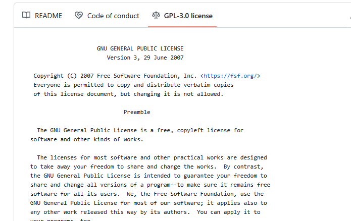

Ending documentation¶
Questions
- How can the user understand how to run your program and what it does?
Learning outcomes of 'Documentation'
learners
- know the most important sections for a full public README
- can make a installation instruction
- can make citation info
- know how to find instruction of going to more sophisticated documentation
Content
-
content of README
- installation
- get started
- test
- citation
-
Revisit licence
-
View other possibilities
- Wiki
- GitHub pages/ReadTheDocs
- MkDocs/sphinx
Revisiting documentation¶
Documentation comes in different forms
- Tutorials: learning-oriented, allows the newcomer to get started
- How-to guides: goal-oriented, shows how to solve a specific problem
- Explanation: understanding-oriented, explains a concept
- Reference: information-oriented, describes the machinery
- In-code documentaion — docstrings
Not to forget
- Project documentation:
- requirements: what is the goal of the software, risks, platforms
- the analysis: pseudocode and UML
- risk analysis
There is no one size fits all: often for small projects a README.md can be enough (more about md format later).
Where are we?¶
DONE
- ☑ In-code documentation
- ☑ Project documentation:
- requirements: what is the goal of the software, risks, platforms
- the analysis: pseudocode and UML
- risk analysis
Finalize today
- ☐ README
- ☐ Installation instruction
- ☐ Tutorial: get started
- ☐ Citation
Further documentation for future projects
- ☐ License
- ☐ Tutorials: learning-oriented, allows the newcomer to get started
- ☐ How-to guides: goal-oriented, shows how to solve a specific problem
- ☐ Explanation: understanding-oriented, explains a concept
- ☐ Reference: information-oriented, describes the machinery
Markdown¶
- One of the most popular lightweight markup languages.
- File extension
.mdmakes it render directly in GitHub!
How does it look like?
# This is a section heading in Markdown
## This is a subsection header
Nothing special needed for a normal paragraph.
This is a code block
**Bold** and *emphasized*.
A list:
- this is an item
- another item
A numbered list:
1. this is an item
1. items are numbered automatically
There is more:
,
[links](URL),
A|B|C
-|-|-
1|x|y
2|m|n
Read more
The README¶
Example content¶
- About
- Installation (with dependencies and testing)
- Get started
- Use cases
- Citation
About¶
- About the software
- What does it do?
- One (Punch-)line describing what it does.
- Also in GitHub in upper right corner!
- More information below below the first description
Installation section¶
Let's take a look at different READMEs
- Also interesting: Is there any test that makes sure it is correctly installed?
Example
- R: https://github.com/KamilSJaron/smudgeplot/tree/v0.3.0?tab=readme-ov-file#install-the-whole-thing
- Conda: https://github.com/biobakery/MetaPhlAn
- pip: https://github.com/deeptools/HiCExplorer
- pip: https://github.com/caleblareau/mgatk?tab=readme-ov-file
- binaries/executable: https://github.com/dougspeed/LDAK?tab=readme-ov-file#how-to-obtain-ldak
Get started¶
- This session can be "running some test data" to get an overview of what the program can perform.
- It may describe how to get test data
- Example: https://github.com/KamilSJaron/smudgeplot/tree/v0.3.0?tab=readme-ov-file#runing-this-version-on-sacharomyces-data
Use cases¶
-
This may sometimes be merged with the previous section
-
How-to guide: goal-oriented, shows how to solve a specific problem
- May be a sub-set of the most important commands, depending on how wide the program is.
- Example: https://github.com/KamilSJaron/smudgeplot/tree/v0.3.0?tab=readme-ov-file#runing-this-version-on-sacharomyces-data
would it be needed for your project?
Contributions¶
- How to contribute?
- Example: https://github.com/KamilSJaron/smudgeplot/tree/v0.3.0?tab=readme-ov-file#runing-this-version-on-sacharomyces-data
Licensing¶
- We use GPL-3 in the project
Strong copyleft share-alike (GPL, AGPL) Derivative work is free software and derivative work extends to the combined project If the licenses of components are strong copyleft, one must use the same license
-
We can click on the license and a image will also show up!
How does that look like?

See also
Acknowledgements¶
- Add references that inspired or added algorithms to your code
- Example: https://github.com/KamilSJaron/smudgeplot/tree/v0.3.0?tab=readme-ov-file#acknowledgements
References/Citation¶
- Think the same as for a scientific paper
Practical recommendations
- Get a DOI using Zenodo or similar services.
- Open source license can't demand citation, but it is required by science ethics anyway.
- Make it as easy as possible! Clearly say what you want cited.
- Make it easy for scripts and tools, use the Citation File Format.
- GitHub now supports CITATION.cff files
Example with NextFlow
Recommended format for software citation
- Creator
- Title
- Publication venue
- Date
- Identifier
- Version
- Type
This is an example of a simple CITATION.cff file
DOI and Zenodo
- Digital object identifiers (DOI) are the backbone of the academic reference and metrics system.
- CodeRefinery has an exercise to see how to make a GitHub repository citable by archiving it on the Zenodo archiving service. If you are interested, have a look at this Coderefinery webpage
Full examples¶
Examples of README files
- R: https://github.com/KamilSJaron/smudgeplot/tree/v0.3.0?tab=readme-ov-file#install-the-whole-thing
- Conda: https://github.com/biobakery/MetaPhlAn
- pip: https://github.com/deeptools/HiCExplorer
- pip: https://github.com/caleblareau/mgatk?tab=readme-ov-file
- binaries/executable: https://github.com/dougspeed/LDAK?tab=readme-ov-file#how-to-obtain-ldak
Exercises¶
Exercises 30-40 min¶
- We already have a file called
README.mdin/learnersfolder, that is used for information for the course participants. - Let's work with a README file for potential users. We can call it
README-EXT.md - (External) users should be able to install and use the the complete tool, including dependencies
Intro
- Repo work
- Work on GitHub!
- When modifying repo, use a group specific branch
- When done, merge/pull request
- In the end we do code review together of the merging conflicts
Markdown Cheat-Sheet
First steps for ALL¶
- Work together in group of 2-3
- 1 person types directly in GitHub
- Do
git pushfirst from local command-line, everyone!
Group 1: Make 'installation instruction' in groups¶
Hints FIX
- The main program
main.pyis in the repo. weatheris a python package needed bymain.py- available here: https://test.pypi.org/project/weather/1.0.1/
Make 'installation instruction'
- Create branch
installation - Open the file
learners/README-EXT.md - Be inspired by the examples above
- Include the sections "Dependencies" and "Installing"
- When done, make pull request to main
Group 2 Formulate an 'About' section¶
Make 'About' and 'Getting started'
- Create branch
about -
Open the file
learners/README-EXT.md -
Be inspired by the examples above
- Include the section "About" which should give some background of what the program does and how to run it.
-
Include the section 'Getting started'
-
When done, make pull request to main
Group 3: Formulate "Sharing sections"¶
Make sections about 'Citation', 'License' and 'Authors'
- Create branch
sharing - Work with a CITATION(.cff) file
How?
Easier
Create a learners/CITATION file (no file extension) with most of the following lines
- Creator
- Title
- Publication venue
- Date
- Identifier
- Version
- Type
Harder
- open the file
learners/CITATION.cfffile - Fill it in
How can it look like?
```yaml cff-version: 1.2.0 message: "If you use this software, please cite it as below." authors: - family-names: Druskat given-names: Stephan orcid: https://orcid.org/0000-0003-4925-7248 title: "My Research Software" version: 2.0.4 doi: 10.5281/zenodo.1234 date-released: 2021-08-11
- Open the file
learners/README-EXT.md - Be inspired by the examples above
-
Include the sections
- 'Citation', link to the CITATION(.cff) file
- 'License' link to the license
- try relative or absolute path!
- 'Authors', List of the involved learners
- 'Acknowledgements'
- Add references that inspired or added algorithms to your code
- Example
-
When done, make pull request to main
Example solution from last course
Discussion of the README file¶
Discussion: Describe what you've done and why?
- We go through the README!
- Teacher makes Code review if needed
Going further with documentation¶
Wikis¶
- Popular solutions (but many others exist):
- Also on GitHub!
- About wikis
- Adding or editing wiki pages
- Example with WRF weather model
HTML static site generators¶
There are many tools that can turn RST or Markdown into beautiful HTML pages:
- Jekyll
- Generates HTML from Markdown.
- GitHub supports this without adding extra build steps.
- Sphinx
- Generate HTML/PDF/LaTeX from RST and Markdown.
- Read the docs style
- HICexplorer documentation
- MkDocs ← this is how this lesson material is built
- Generates HTML from Markdown.
- Example: Programming formalisms course
There are many more ...
Do you like one style more?
Deployment on servers¶
GitHub, GitLab, and Bitbucket make it possible to serve HTML pages:
- GitHub Pages (GH-pages) ← this is what we and many others use for course and tutorial material
- Easy to set up. Part of GitHub Actions and CI
- Bitbucket Pages
- GitLab Pages
- Read the docs ← this is what NBIS uses for some course material
- hosts public Sphinx documentation for free!
- Somewhat more possibilities, like having several versions of documentation to switch between. Good for different version releases of a software
- Example: NBIS Introduction to Git
Summary¶
Key points
Make sure it works for others or yourself in the future!
We are done¶
Parts to be covered!
- ☑ Source/version control
- Git
- We have a starting point!
- GitHub as remote backup
- Branches
- ☑ Planning
- ☑ Analysis
- ☑ Design
- ☑ Testing
- Different levels
- ☑ Collaboration
- GitHub
- pull requests
- ☑ Sharing
- ☑ open science
- ☑ citation
- ☑ licensing
- ☑ deploying
- ☑ Documentation
- ☑ in-code documentation
- ☑ finish documentation
See also